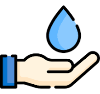
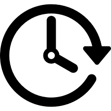

La digitalización mediante el uso del Internet de las Cosas permite a Alicona Campo Verde mejorar su forma de trabajar. Al disponer de datos en tiempo real, la empresa puede controlar mejor sus procesos, reducir errores y tomar decisiones más eficientes. Esto supone una mejora tanto a nivel productivo como organizativo.
Inicio de la transformación digital de la empresa
Beneficios para Alicona Campo Verde:
Ahorro de agua y recursos.
Mejora del rendimiento y calidad de los cultivos.
Reducción de errores humanos.
Ahorro de tiempo para el personal.
Mejor planificación y control de los procesos.

